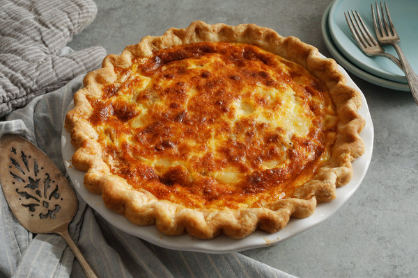

Home
Quiche

Description
This a classic quiche recipe. This quiche will be a mixture of eggs, bacon,
alpine cheddar cheese, and heavy cream. The mixture is served
in a nine-inch pie crust and cooked in an oven set to 375 degrees for
about 30 minutes.
Ingredients
- Favorite pie crust
- 3/4 pound bacon
- 1 large yellow onion, peeled
- 2 tablespoons butter
- salt and pepper
- 3/4 cup heavy cream
- 1/4 cup milk (whole, low-fat, or skim, your choice
- 6 large eggs
- 1 1/2 cups grated Cabot Alpine Cheddar
- 1/4 teaspoon salt
- 1/4 teaspoon ground black pepper
Instructions
- Preheat the oven to 375 degrees Fahrenheit
-
Roll the prepared crust into a 12" circle (to fit a 9" pie pan). Prick
it all over with a fork. Bake the crust for 10 minutes, then remove it
from the oven and set it aside to cool.
-
To make the filling: Cook the bacon in a frying pan until crisp. Let it
cool on a paper towel-lined plate. Once cool, roughly chop it up.
-
Dice the onion into medium-sized pieces (about 1/2"). Melt the butter in a
saucepan over medium heat and add the onion. Season to taste with salt and
pepper. Cook until the onion has softened and is just starting to brown.
Remove it from the heat and set it aside.
-
In a large bowl, whisk together the cream, milk, and eggs. Add bacon, onions,
cheese, salt, and pepper. Pour the mixture into the pie crust. Don't overfill!
If you find you have to much filling, just leave a little out, baking it alongside
the pie in custard cup, if desired.
-
Bake the quiche for about 40 minutes. The edges should be golden brown and the center
should feel just set.
-
Remove the quiche from the oven and let it cool on a rack. Serve warm, or at room
temperature. Refrigerate any leftovers.
- Yield: one 9" quiche.